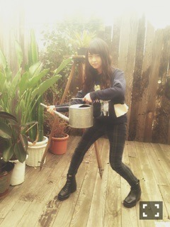
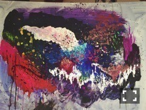
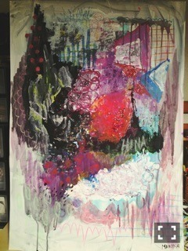
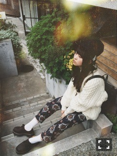

| 2014/11 11 Tue | うちゅうとほうせき 。613回目 |
っっや！！

植物園おじまりか←未央奈命名
乃木どこクイズ王で
コケ問題に挑戦しました！
自分の得意ジャンルってなんだろう
って考えたら苔くらいしかなく...
趣味程度で、苔について
調べたりしてて少しだけ
苔の種類は知っていたので。
逆に苔という狭過ぎる範囲で
クイズにはうってつけでした。
なにより古川さんに圧倒された！
クイズで答えるための考え方とか
ボタンの早押しとか凄いなあと...
とても面白い方でした^^
今週もよろしくお願いします。

前に2人で取材あったんだーきゃぴ
／
描いたり作ったりなんかしらしたら
載せてみるこーなー
＼

銀河

いろんな画材を使った
きらきらきらきら
こちらは川後さんに渡す予定。
スパンコールとかピンクとか
きっと好きだと思って。
そしてさりげなく名前入り〜
2つとも近くで見れば見る程楽しい。
アンダーライブで披露した絵を機に
絵の具をべちゃべちゃ使うのに
はまっています。
この間筆を購入したけど、
素手で描くのもたのしいです。
大きい紙に絵の具べちゃべちゃ
してると4th個人pvを思い出します。
近くでテレホン
あうとふぃっと


ニット used
パンツ RNA-N-
靴 used(Dr.Marten)
帽子 TABATHA
今日は男の子な気分だったよん
ポイントは白ソックスと
スナフキン帽だよん

今日は趣味の話と服のことでした。
時間あらば服活、ずがこうさく
アンダーライブが終わって
少し落ち着いたけど、
大阪ライブがあるので
切り替えよう、、
名古屋と大阪でチーム分けのライブ
なかなか新鮮で面白い。
私は大阪ね！
初の試みだからね。
リハも頑張ってます。
アンダーライブと
クリスマスライブもあるし、
今年もたくさんライブができて
幸せだあー
一旦落ち着くと考える時間が
あり過ぎて逆に疲れる。
そんな時ない？
いっぱい動きたいがんばるぞ
まりか
コメント(754)
2014/11/11 20:30